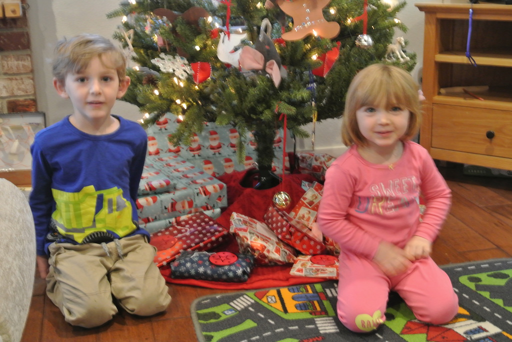
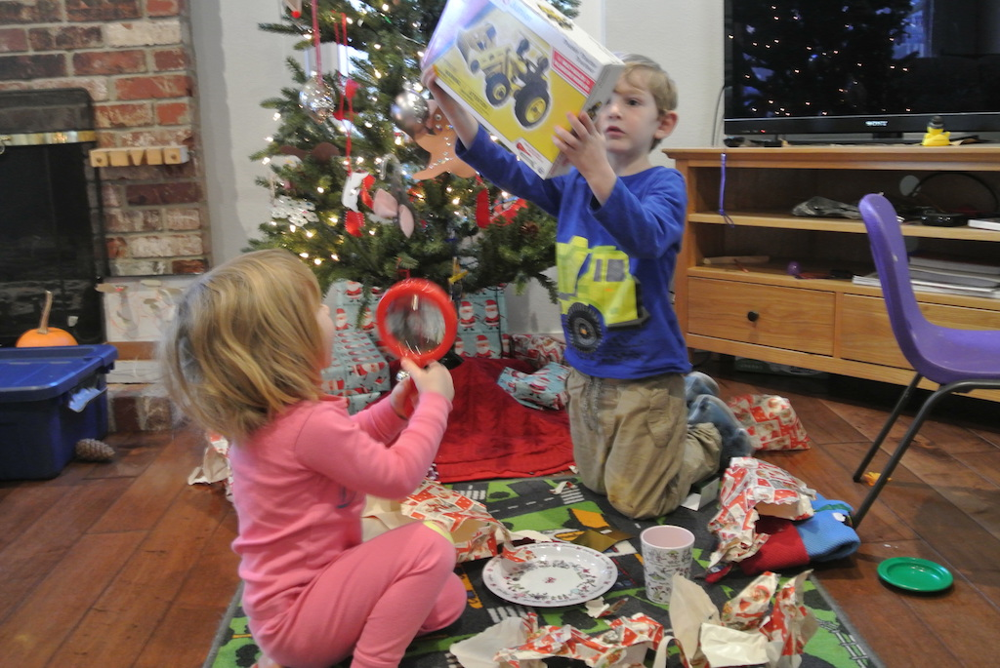
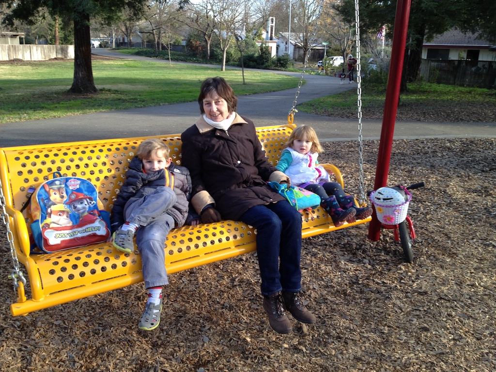
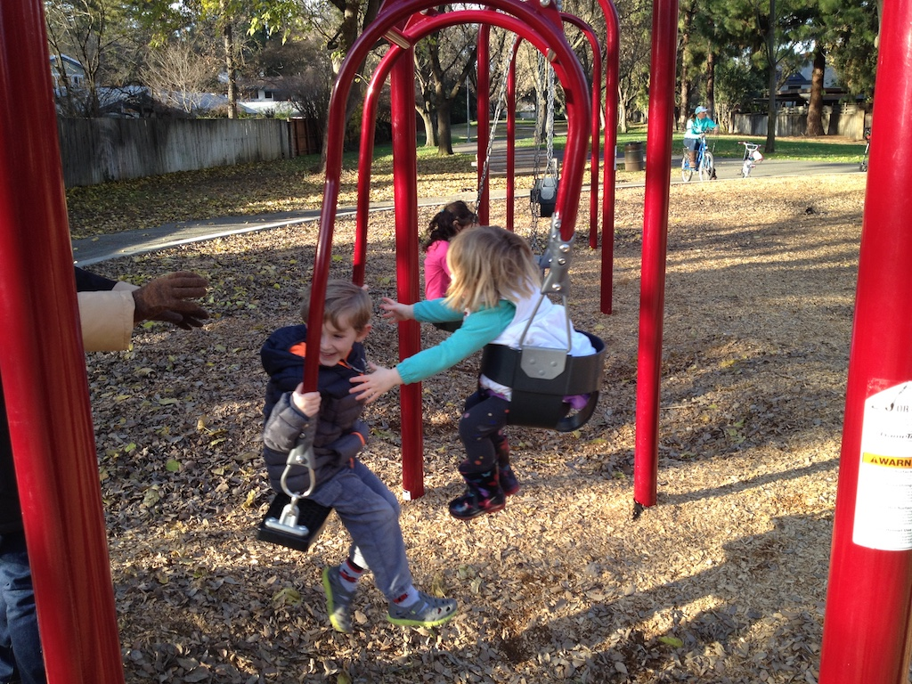
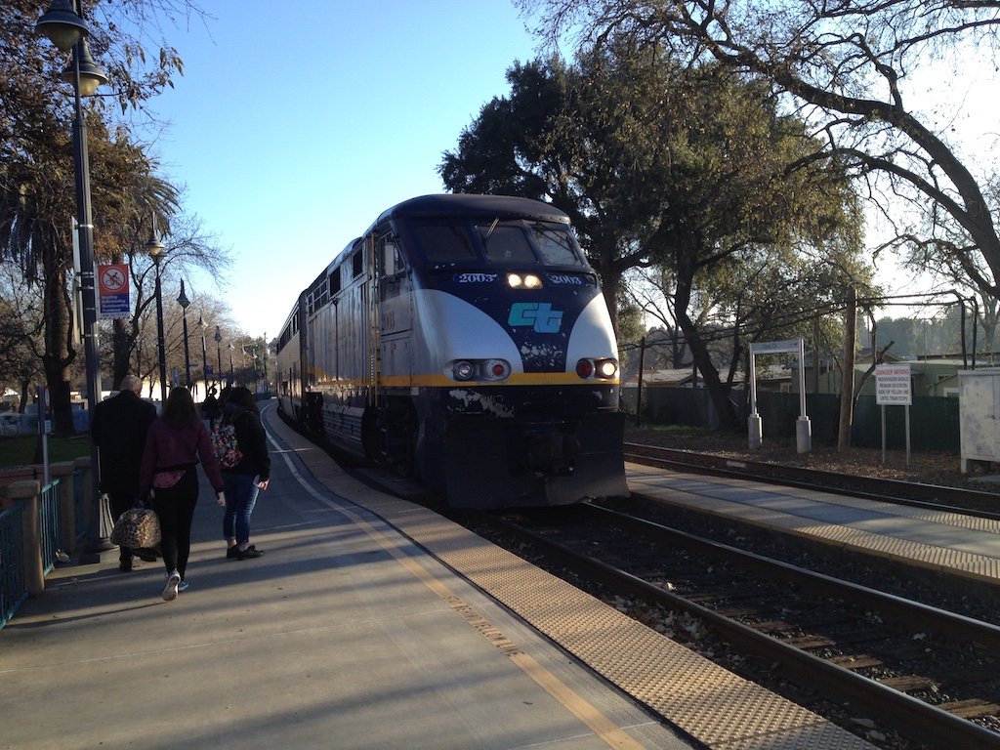
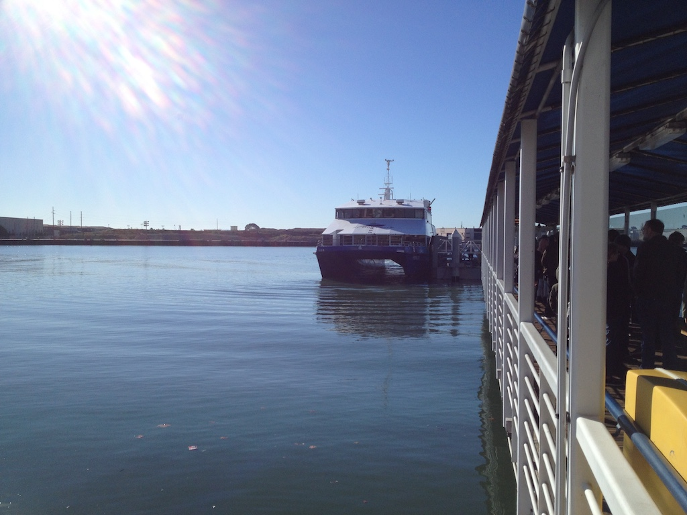
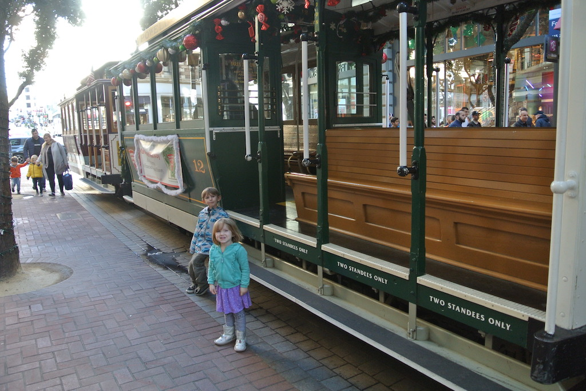
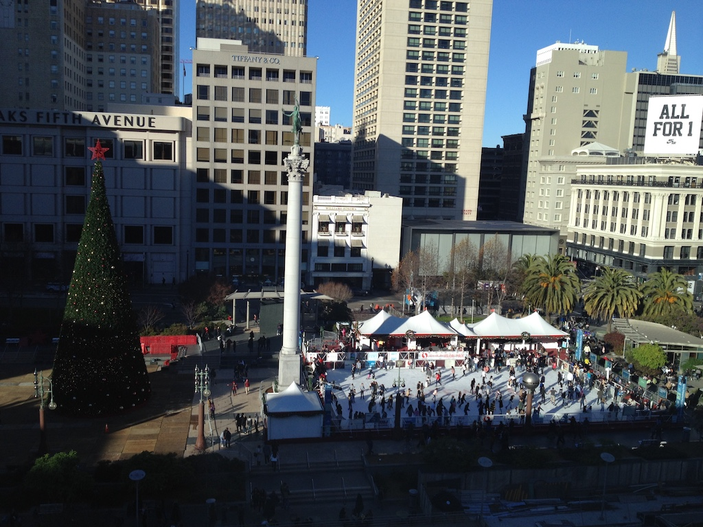
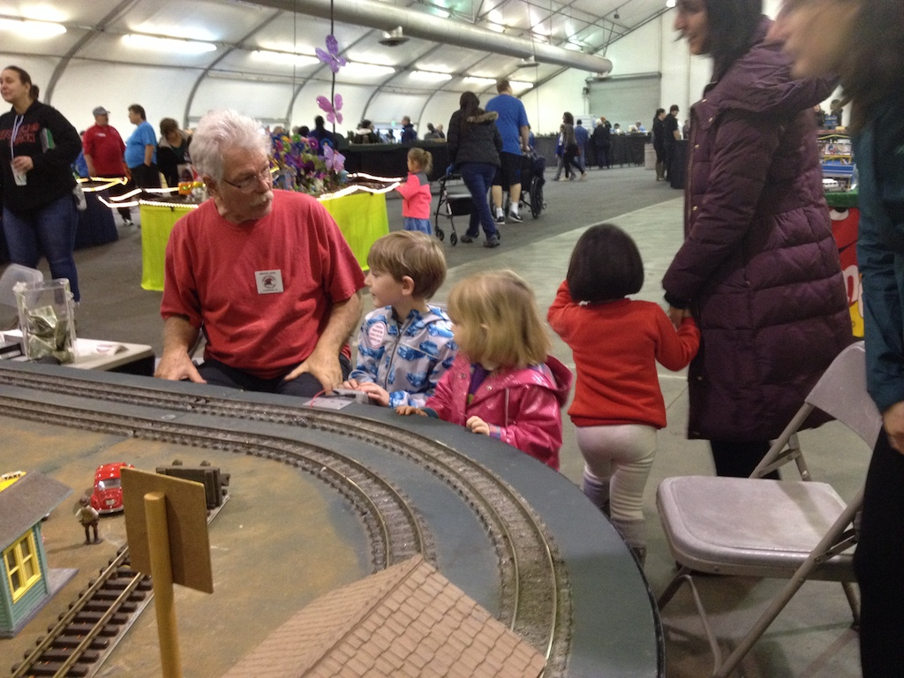

Thursday 20th December was not the day we had expected. At least we were not where we expected to be. We heard on the radio in the morning that Gatwick airport was closed due to one or more drones being flown oer the runway. The Norwegian website and the Gatwick departures 'board' showed our flight was still scheduled. So our taxi took us and we joined the queue. We arrived at 10:30, but it was not until one o'clock that the flight was cancelled, saying that we could change our booking online. We tried while we were at the airport, but the web site would not let us select the Sunday flight. However, we found that we could use the train for free. So we caught the service to Shoreham, where we had lunch in Truffles before getting a taxi home. Norwegian only fly to Oakland on Sunday, Tuesday and Thursday. The Sunday flight was full, Tuesday is Christmas Day and, although the flight is scheduled, the train to Davis does not run that day. So we booked seats on Thursday (a week late), with a return on the 8th, about ten days later.
One week later, and so after Christmas, the flight was on time. It was a reasonable flight that arrived at Oakland airport 35 minutes early. However, by the time that they finally delivered the luggage we were crossing the bridge to the station when we saw the train depart! So we went back to the BART station and caught the train to Richmond, where we could catch the next Capital Corridor train. We arrived at Davis just before eight o'clock. After a reasonable night's sleep we were up fairly early. After breakfast we wrapped Christmas presents so that everyone could open them! I helped Austin build one of his Meccano models and Juniper had a nap, having been unwell during the night. After lunch I went with Brandon and Austin to the 'brewing' shop to buy malted barley and some other bits. We then played some games. As often seems to happen when we visit, Austin and Juniper were very late to bed.
On Saturday Brandon's friend Ed called and they made a batch of beer. They have quite a lot of quite expensive equipment. Meanwhile Victoria, Angela and the children walked to the nearest supermarket to do some grocery shopping. After a lunch of beef burgers we took Austin and Juniper to the nearest park while V&B went to another supermarket to get the rest of their groceries. In between these activities we played with the children. As usual, they both became much more energetic as bedtime approached!
 Sunday started with frost on the roof tops, although again it was a sunny day. Victoria was not feeling well and spent a good part of the day in bed. During the morning I failed to make any headway with one of Austin's video games, but after lunch we went for a 'hike' to a couple of playgrounds. Juniper was 'reluctant' to come home without being carried!
New Year's Eve, was really just a day like any other when visiting the Hurr family. Victoria was feeling a lot better and she cooked a 'Christmas' lunch, although we ate it with the part-finished jigsaw in the middle of the table. After lunch (and a lot of washing up) we walked to the nearest supermarket to buy just a few items. It was another fine, sunny day, but much windier than previous days. We then finished the jigsaw, had a picnic style tea, bathed Austin and Juniper and then read them stories. We did stop for a while to watch some of the 'public' news programme, where they showed a little of New Year's fireworks from New Zealand to Paris.
New Year's Day. 2019 already! It was a relatively late rise for everyone and a nice sweet bread for breakfast. Part of the morning was spent making butternut squash soup for lunch, which was then a little late. A&J didn't get dressed until the afternoon, after V&B had gone out to the cinema. They saw Spiderman!
Wednesday was a tiring but good day. We started early, with Brandon taking us at eight o'clock to the station. Everyone else was up and had eaten breakfast when we left, so Brandon returned home for the others while we bought the train tickets and we all caught the nine o'clock train to Oakland. There was a short hold-up, so we were late arriving. however, we found the ferry terminal and just caught the 11 o'clock ferry to San Fransisco. The first port of call was the Ferry Building, but we stayed on the ferry to Pier 41.
It was lunch time by the time we docked (they eat early and the children had both eaten most of the snacks that Victoria had packed) so Brandon found online a jacket potato 'place' just off the main coast road. It didn't look particularly clean, but the potatoes were good. We then walked back to Pier 39 to look at the sea lions basking on the pontoons. They were very smelly.
Then it was back past where we had eaten to the end of the cable car line. Brandon had bought us all day passes so we went to the other end of the Powell-Mason line and walked back up Powell to Union Square. There we saw the Christmas decorations and the ice skating rink. We had a good view of the whole square from the seventh floor of Macy's, where we had popped in for a drink. It had been sunny all day and it was really quite warm in San Fransisco. We had to take off a layer.
Originally we had thought of having dinner in San Fransisco and then getting the BART to Richmond, but we decided to walk up to California street and catch a tram back to the Ferry Building. We then just caught the ferry back to Oakland where we called into an Italian restaurant for a light meal and again just caught the 6:10 train to Davis. We waited at the station for Them to collect the car and take the children home. Then Brandon came to collect us. We were back by about eight o'clock, tired, but happy.
On Thursday and Friday I helped Austin build the Nintendo cardboard 'robot' controller. It took a long time and was quite complicated and tiring. It is very good technology, even if it is all about destruction.
Saturday was overcast and raining for most of the day. However, we made a relatively early start by taking Austin and Juniper to Home Depot for their monthly kid's building activity. They built and painted a mini white board on an easel.
Sunday was another rainy day, in fact a very rainy day with quite a strong wind. So we whiled away the morning, had an early lunch and then Victoria took the children and us to Sacramento to a model railway exhibition.
The mother of Juniper's friend Lena had called and asked if we would like to join them there. The rain was very unpleasant, both driving there and walking from the car park. But it was a good exhibition, with about a dozen train layouts and lots of trade stalls. We arrived just before one thirty and were home just after four o'clock. Then we had a good steak dinner that Brandon had cooked.
Monday 7th January was back-to-school day. So we stayed safely in bed until Brandon had gone to work and Victoria had taken the children to school. Tuesday however, was a day for packing and travelling. We caught the 12:25 Capitol Corridor train from Davis to Oakland and then the six o'clock flight (which didn't take off until nearly seven) to Gatwick, arriving just 20 minutes late at 12:15. So we were home by two o'clock, tired, but having had a good trip.
© David James 2019 Last updated: 10th January 2019